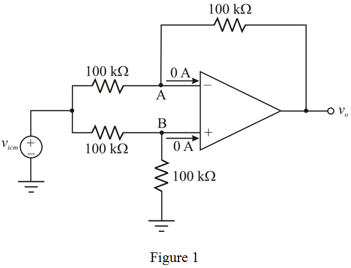
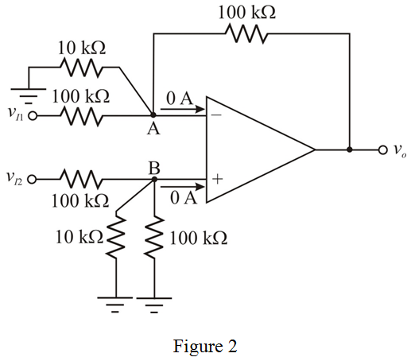
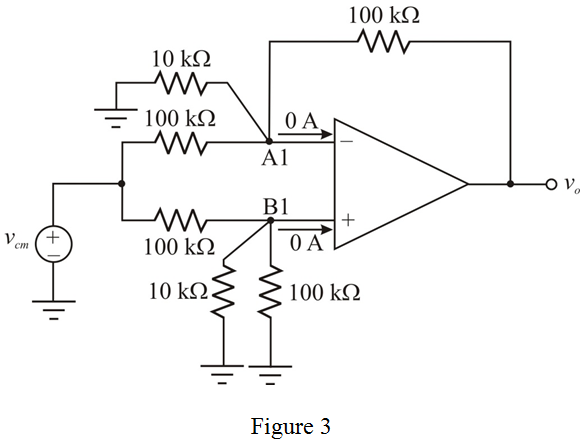

(a)
Refer to Figure P2.68 in the textbook.
The expression for the differential gain is,
Substitute  for .
for .

Therefore, the differential gain,  is,
is,  .
.
(a)
Refer to Figure P2.68 in the textbook.
The expression for the differential gain is,
Substitute for .
Therefore, the differential gain, is, .
The expression for the common-mode gain is,
Substitute  for .
for .
Therefore, the common-mode gain,  is, .
is, .
(b)
Connect a common-mode voltage to the inputs of the op-amp and draw the modified circuit.

Consider that the positive and negative terminals voltage is, .
Apply Kirchhoff’s current law at positive terminal.
At , the minimum common-mode input voltage is,
At , the maximum common-mode input voltage is,
Therefore, the range of common-mode input voltage,  is, .
is, .
Connect a  resistor between node A and ground, another
resistor between node A and ground, another  resistor between node B and ground.
resistor between node B and ground.
Draw the modified circuit.

Apply Kirchhoff’s current law at non-inverting node.
The inverting node voltage due to virtual ground concept is,
Apply Kirchhoff’s current law at inverting node.
Find the value of differential gain,  .
.
Therefore, the differential gain,  is, .
is, .
Connect a common-mode voltage to the inputs of the op-amp and draw the modified circuit.

The inverting node voltage due to virtual ground concept is,
Apply Kirchhoff’s current law at inverting node.

Therefore, the common-mode gain,  is,
is,  .
.
Consider that the positive and negative terminals voltage is, .
Apply Kirchhoff’s current law at non-inverting node.
At , the minimum common-mode input voltage is,
At , the maximum common-mode input voltage is,
Therefore, the range of common-mode input voltage, is, .